Overview of CRYENGINE 5.2
CRYENGINE 5.2 is now available for download!
Welcome to the release notes for our next major CRYENGINE update: CE 5.2. In this release we have focused on addressing community feedback by adding some long requested features (FBX Importer support for animations!) and continue with our recent efforts to make getting started and working with the Engine easier than ever.
Please be aware that we have restructured our Release Notes – they are now aligned with our new Roadmap and are listed according to the internal development team. This alignment will make it easier for users to compare the Road Map with the Release Notes and better track the progress we are making.
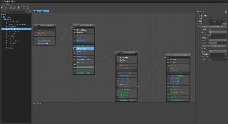
Sections
Code Interface Changes
See the Important CRYENGINE 5.2 Data and Code Changes article for more information.
If you are upgrading from CRYENGINE 5.1 please read
Release Highlights
Here are some of CRYENGINE 5.2’s key features and improvements.
Animation: FBX Import Pipeline Support for Materials and Animations
Support for FBX has been a popular long time request from our users, hence we are very happy to announce major additions for 5.2. Building upon the FBX Importer support for static meshes in 5.0, users are now able to quickly and easily import materials and full animations. The importer automatically converts and saves all files in the appropriate Cry-formats, thus making the process as straightforward and as efficient as possible. Make sure to give us your feedback through the once you have tried these new additions! See the videos below for more information.
Animation: VCloth 2.0 Character Cloth Simulation
VCloth 2.0 is a new attachment for the existing Character Tool that gives users vastly expanded options when it comes to placing accurately simulated cloth onto their characters. The initial setup in Maya uses vertex colors to constrain cloth vertices. After exporting the cloth as a skin file, the cloth can then be set up directly in the Character Tool. To see how to set up the simulated cloth in Maya and see it in action in CRYENGINE, see the video below.
Animation: Constraints on Live Characters
This new feature allows users to place restraints such as ropes or shackles on characters that will physically and accurately affect their animations. The rigid body solver now recognizes rigid bodies that are part of an articulated structure and uses callbacks to calculate their contact matrices and apply impulses (based on spatial Featherstone algebra). If some constraints involve pure physical (simclass 2) objects, the character will be simulated in the same group as them. Otherwise, it'll use an isolated call to InvokeContactSolver.
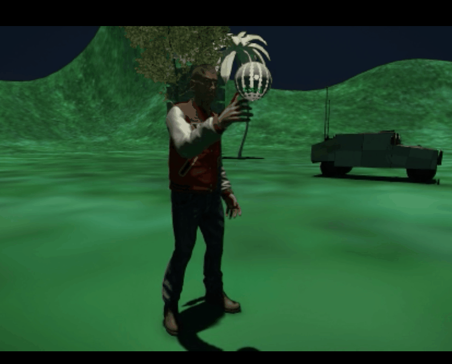
Content: New C++ Starter Templates
Additional templates that are beyond the venerable GameSDK have also been on many community members wish lists, so we are very pleased to announce that 5.2 includes 5 brand new C++ based templates for a variety of genres and camera perspectives. We have stripped out as much unnecessary code as is possible to give you a clean canvas that you can achieve your vision on, hence getting started will be fast and as easy as is possible.
For each template that uses a character we have partnered with Mocap Online to provide their default character and a rifle locomotion set to get you up and running with a bare bones mannequin setup.
The Templates include:
- First-person camera template
- Third-person camera template
- Sidescroller camera
- Top-Down camera template
Rolling Ball physics template
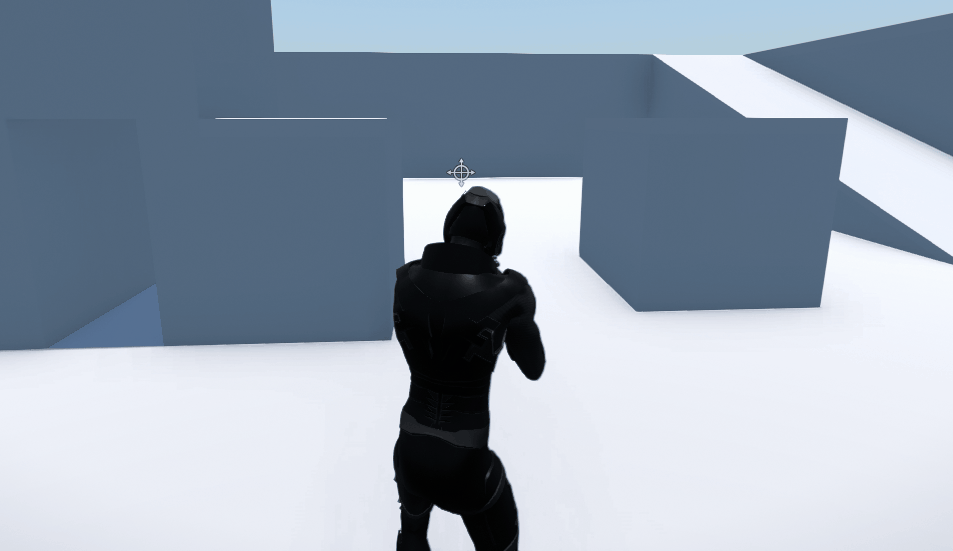
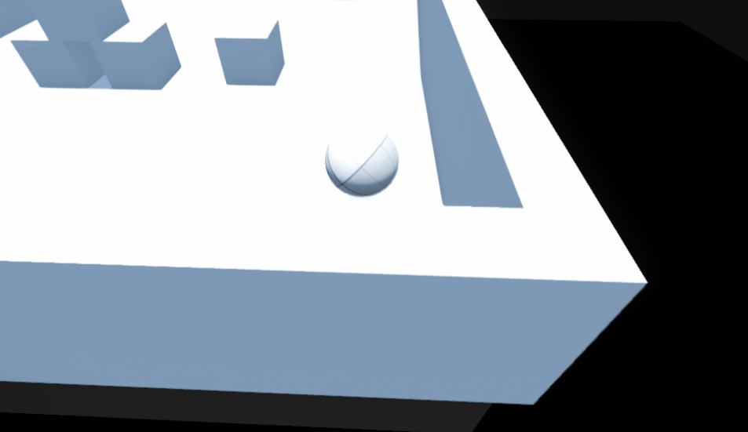
As before, you will be able to select these templates during the new streamlined project creation flow (see ‘Core: Project Launcher Tools’ below). Please let us know what other templates you want to see released in future Engine updates!
Content: Documentation Overhaul
While technically speaking not part of the actual 5.2 release, our Documentation Overhaul is nevertheless an important piece of the puzzle, and again something that is directly based on your feedback. We have made great progress in our on-going efforts to completely overhaul our Documentation to make it easier to find the information you need. This includes some detailed (and highly requested) starter documentation for our CE# framework. As it’s an ongoing effort we’d be grateful for any feedback regarding the new documentation.
Core: Project Launcher Tools
Continued development has resulted in an easy and central method for the Launcher and other external programs to call Engine operations. Users need no knowledge of how the operations are performed. See here for more information.
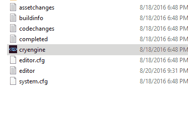 | 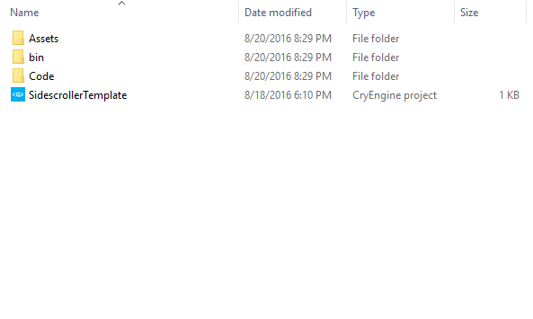 |
Core: CryPlugin System - BETA
Another highly requested feature (notice the trend) has been support for custom Plugins, well in 5.2 we are happy to roll out the initial stages of this system. With this system we want to be able to support Plugins that are written in both C++ and C#, and in the same way. These are managed through the new CryPluginManager which is part of CrySystem. With this system it will be much easier for people to extend the Engine and without the need for great C++ skills. We really want to know what you think, so please make sure to give us your feedback through the once you have tried out these new Plugins.
Please be aware that 5.2 only includes the basic implementation – a more fully featured Plugin is being developed for our next major release CRYENGINE 5.3.
Sandbox: Notification Center
The new Notification Center is part of our ongoing efforts to make the Sandbox UI more comfortable and efficient for users. Here users will find all task lists, errors and warnings gathered in one central location as non-modal pop-up messages; this includes a history of previous messages. See the video below for more information.
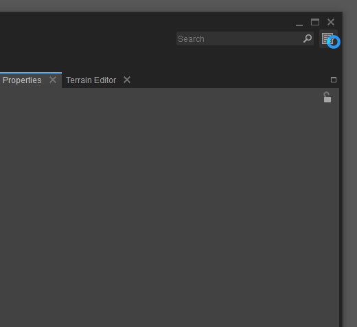
Sandbox: Viewport Gizmos
We have reworked the Viewport gizmos to make working with 3D objects in the Viewport more intuitive and with a design that is more in line with industry standards used in other 3D packages. The new implementation builds and enhances on the previous class structure for gizmos. Gizmos are now more independent from the object manager, allowing for more components to register and use gizmos in Viewports and they also have their own interaction routines.
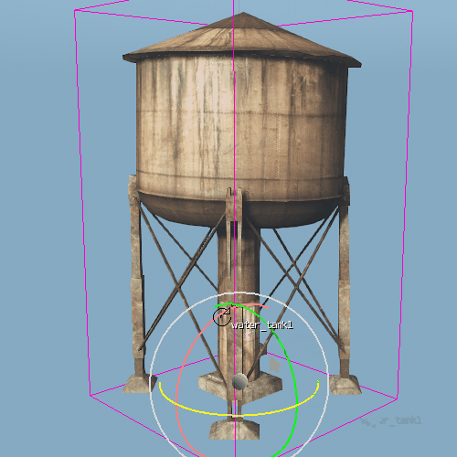
Sandbox: Particle Editor
In CRYENGINE 5.0, the Particle Editor was given its own, brand new, node-based UI. This UI has now been further refined and given a style overhaul to make it fall into line with how the CRYENGINE node-based tools will look in the future.
We hope that you find the new Particle Editor more intuitive and easier to use. Please feel free to give us your feedback via our .
| CRYENGINE 5.1 | CRYENGINE 5.2 |
|---|---|
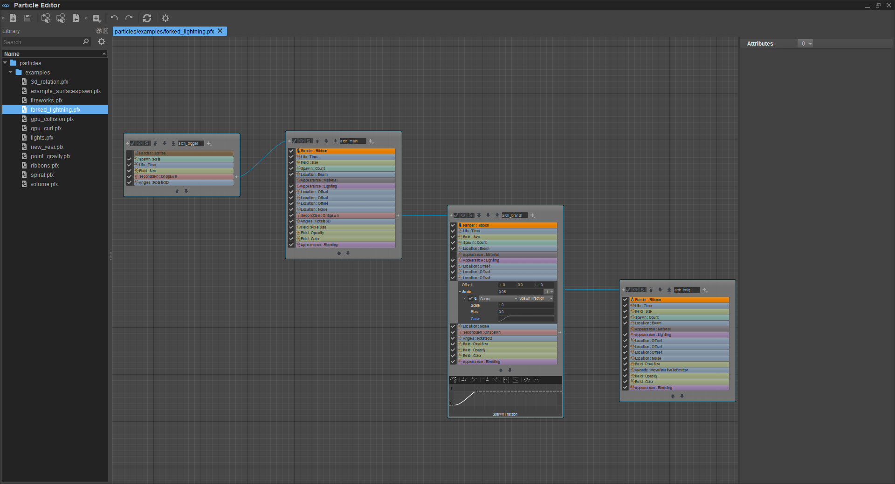 | 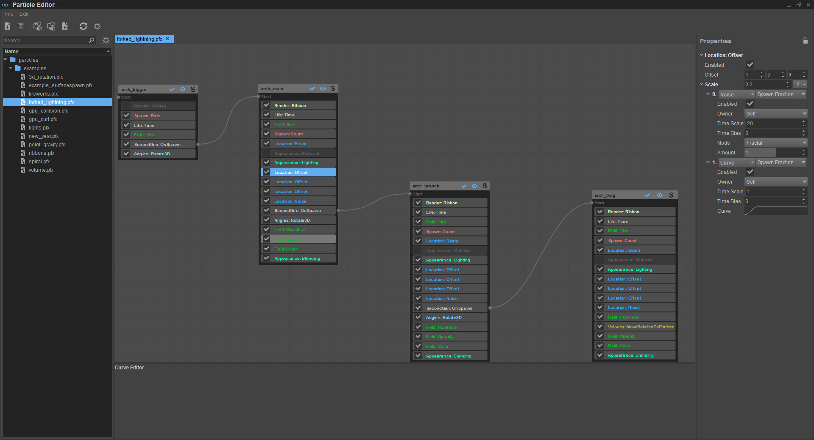 |
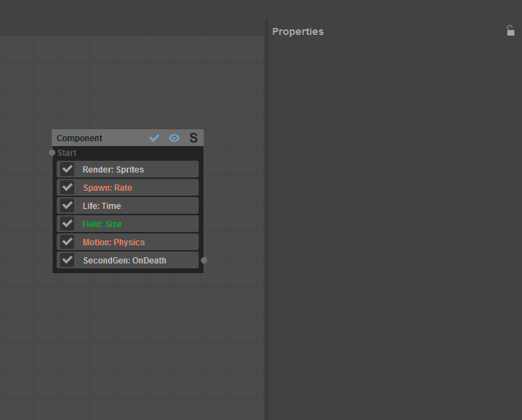 | 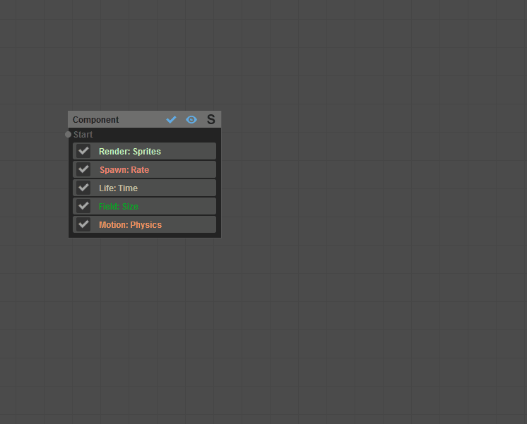 |
Launcher: Simplified Project Creation and Management
With the recent update to our CRYENGINE Launcher we have made the creation of new projects (using both C++ and C#) easier than ever. With just a few clicks you can quickly choose your preferred Engine version, framework and template (including all the new C++ templates). You will also notice that we have reworked the layout of the Launcher’s main page, moving the links to our other Crytek channels to the bottom and adding a button that will directly launch your game.exe from within the launcher.
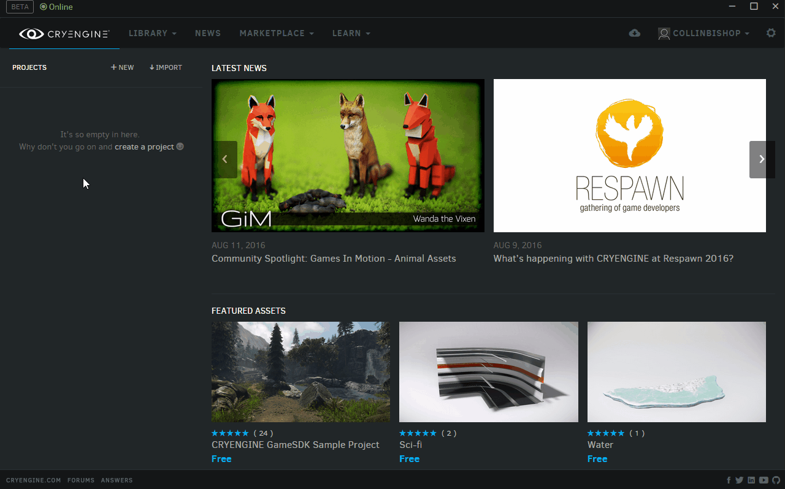 | 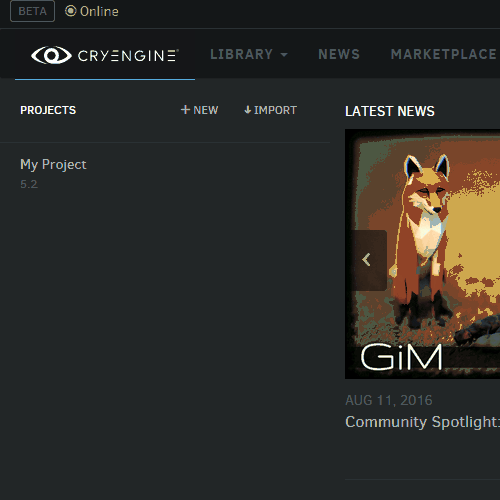 |
Launcher: Reporting Tool
We have also added a new Reporting Tool that allows users to more comfortably report issues they run into. Users can also decide to automatically attach all required logs and dump files to their report – this allows us to more accurately determine the cause of their problems.
Rendering: Extended Analytical Occluders Support for SVOGI -BETA
5.2 brings further improvements to our popular SVOGI feature (as seen in games such as KINGDOM COME: Deliverance, MISCREATED and WOLCEN: Lords of Mayhem). For this release we have greatly extended the usage of analytical occluders, which can lead to major improvements to the quality and resolution of indirect shadows while avoiding some of the common problems of working with voxel-based global illumination.
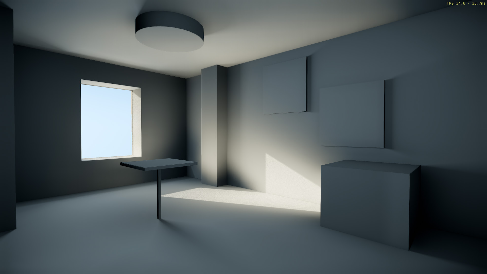
Rendering: Detailed Screen Space Shadows (DSSS)
Detailed screen space shadows have actually been part of the Engine in previous releases, but 5.2 marks its official release as a fully documented and supported feature. DSSS works in conjunction with regular shadow maps to prevent common problems such as shadow bias and low resolution. This is especially common with character’s faces, where DSSS allows a more performance-efficient way to handle such issues.
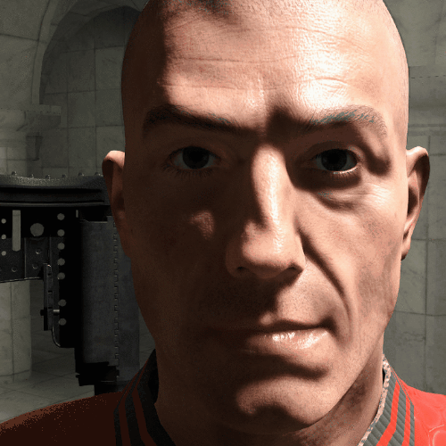
As always please leave us your feedback in the !
Animation
Animation General
- New: Shipped out a new Compute Shader skinning algorithm supporting up to eight bone weights per vertex, blend shape (morph target) deformations and improved tangent frame recalculation. Offers the same feature set as the previously existing CPU skinning algorithm with increased fidelity and significantly better performance.
- New: VCloth 2.0 - New, robust cloth simulation system for characters. High performance and stability.
- Fixed: Fixed an issue with morph target buffers not getting initialized properly when their controller joints are not present in the character skeleton. The behavior was inconsistent with the exposure of IVertexAnimation interface that enables procedural control over morph target weighs, regardless of the joint presence.
- Fixed: Issue with RC refusing to process and animation runtime refusing to load .chr files that do not contain geometry chunks.
- Fixed: Integrated a fix to perform a proper physics update of CGA entities after forcefully skipping to the end of an animation clip.
- Fixed: Implemented weight normalization in LookPose/AnimPose pseudo-example loading code to increase its overall robustness. Replaced a couple of related asserts with proper validation code.
- Fixed: Several memory issues and potential crashes related to the attachment system and skin geometry merging.
- Fixed: Selecting a specific animation for a key in TrackView triggers assert.
- Tweaked: Back-integrated a tweak which enables support for negative morph target weights.
- Tweaked: It is now possible for a game project to adjust the maximum number of animation layers available in the layered transition queue.
- Tweaked: Moved character shadow capsules definition to the *.chrparams file.
Character Tool
- Fixed: Animation clips are no longer reset and re-queued for playback when previewing blendspace parameter changes.
- Fixed: Parameter ranges in the Animation Layers section are now correctly updated when switching between blendspaces.
- Fixed: Timeline widget now shows duration of the selected animation clip and determines whether slider position falls in the currently visible range correctly in all cases.
- Fixed: Potential crash caused by premature deallocation of the view menu widget.
- Fixed: Solved several event timing issues and performed partial code cleanups of the Character Tool's dock system.
- Fixed: Improved various unintuitive behaviors exhibited by Character Tool when interacting with asset and property panels by tweaking mouse input handling logic and fixing signal/slot timing issues.
- Fixed: Corrected the behavior and introduced proper diagnostics for missing skeleton aliases in the *.animsettings serialization code.
- Fixed: Implemented a workaround for the asset panel failing to include certain imported assets when their resource cache entries are invalid.
- Tweaked: Enabled support for negative morph target weights.
Mannequin
- Fixed: Crash occurring when undocking FragmentEditorPage.
AI
AI System
- New: VisionMap: observers can provide custom conditions for ShouldObserve test.
- New: Added support for deferred tests to TPS extenders.
- New: Added flags to override message bubbles rendering: depth test and framing.
- New: Implemented IAIDebugRenderer::Draw2dLabelEx.
- New: Allowed cancelling specific bubble message.
- New: Allowed filtering bubble messages by message name.
- New: Showing several bubble messages on the same entity stacked.
- New: Allowed using "canShootTwoRayTest" TPS condition without IAIActor.
- New: Added parameter to PathFollowerParams to snap path end point to the ground.
- New: Added CVar command to reload Navigation config.
- Refactored: Exposed AIBubblesSystem outside from AISystem.
- Refactored: MNM: refactored and improved TileGeneratorDraw and MNMDebugLocator functionality.
- Refactored: MNM: refactored some stages of TileGenerator to improve readability of code.
- Refactored: GraphNodeManager::GetNode no longer returns a dummy node, but rather asserts that the desired node exists, thus giving chance to figure out what might be going wrong on the caller's side.
- Fixed: Avoided long stalls in navigation WorldMonitor right after big levels with many physical objects are loaded.
- Fixed: Navigation meshes missing right after exported level is loaded.
- Fixed: MNM: Min and max vertex selection for simplified contour when there are no unremovable vertices.
- Fixed: MNM: Pinch point detection on internal contours (holes).
- Fixed: NavMesh: remove only requested OffMesh link instead of all links of the same owner.
- Fixed: Behavior Tree: Fixed WaitUntilTime node's parameter "succeedIfNeverBeenSet" loading.
- Fixed: NavMesh: when deleting a mesh, listeners were not notified that OffMeshLinks were about to get removed as well.
- Fixed: Debug draw of Navigation system mesh generation progress bar.
- Fixed: Wrong movement request reported as finished.
- Fixed: VisionMap: Callbacks not being triggered when observer or observable are unregistered.
- Fixed: Navigation System: Restored debug drawing of path finding. Supported any entity for debug probes for island connectivity.
- Fixed: AIBubblesSystem was writing to a string while reading from it at the same time.
- Fixed: MNM: detected and marked unremovable points where borderH and borderV connect together.
- Fixed: MNM: detected and marked unremovable pinch points to fix mismatching contours in neighbour tiles.
- Fixed: MNM: used proper border size in TileGenerator::CalcPaintValues.
- Fixed: MNM: BorderSizeH and BorderSizeV calculation to take inclanation test into account.
- Fixed: CVehicleSeat::GetMovementState didn't take into consideration the scaling of a transformation matrix when computing direction vectors, thus causing non-unit vectors end up in CAIActor::SetPos.
- Fixed: Bypass null IPhysicalEntities when checking line-of-fire.
- Fixed: CAIObject: dynamically spawned objects (like grenades) were ending up with a dangling handle into the VisionMap when the game exited and returned to editing mode
- Fixed: Cover surfaces: copying cover surfaces in the editor caused inconsistencies in the free pool on the AISystem side and yields to crashes when dynamic covers come into play.
- Fixed: CoverSampler: there was still an edge case where after simplification we could end up with less than 2 samples.
- Fixed: Movement planner: re-pathfinding now if we figure that a previous pathfind request comes back with its result just after a UseSmartObject block changed its state from "prepare" (still interruptible) to "traverse" (and is no longer interruptible then!).
- Fixed: CAISystem::SendSignal: when sending signals to a group, the pseudo group was also receiving those signals, causing unrelated AI agents to base their decisions on inconsistent information.
- Fixed: CSmartPathFollower: when about to start traversing a path, we now allow for a much higher z-tolerance to find the start index on the path (this is important for when we're still traversing a SmartObject at a significantly different height than our upcoming path starts at).
- Tweaked: SequenceAgent: now showing a bubble message instead of failing an assert when the level designer has assigned a non-CAIActor to the sequence.
- Tweaked: AI: Improved path finder warning message when start or end point was not on the NavMesh.
- Tweaked: NavMesh: Now shows island ID in mode ai_debugDrawNavigation=5 and slightly increased font size.
Audio
Audio General
- New: Added parameter to the PlayFile method (allowing specifying if the line is localized and which audio trigger should be used as a playback reference).
- New: Occlusion system now offers 4 new modes, adaptive, low, medium and high (granularity).
- New: Introduced new occlusion system with higher granularity per audio object which produces stable occlusion values.
- New: Changed format for preload requests.
- New: Added PlayFile functionality to the FMOD impl.
- New: Added PlayFile implementation for SDL Mixer.
- New: Option to draw activity radius for the stop trigger in an ATS.
- New: Possible to link activity radius and attenuation.
- New: Occlusion fade out area.
- Refactored: PlayFile now also returns a boolean to indicate if a request was send to the middleware.
- Refactored: Updated the coding style in the SDL Mixer implementation.
- Optimized: SDL Mixer now uses the new PlayFile parameters.
- Optimized: Swapped out audio proxy queued commands for a more suitable template driven approach.
- Optimized: ResetAudioObject and ResetAudioEvent is called before Destroy is called on these objects.
- Optimized: Optimized the updating of audio middleware about new occlusion values, this is now only done if there are truly new values. Also when leaving an audio object's activity range the occlusion and obstruction values are reset.
- Optimized: Occlusion system now uses less memory per audio object and calculates values more quickly.
- Optimized: Optimized setting of buses to be more efficient.
- Optimized: Preventing unnecessary calls into FG from area type lua scripts where values didn't change.
- Optimized: Have a central place to delete un-used AudioObjects, instead of having separate checks in a lot of places. Fixes as a side-effect an crash in FMOD, when the AudioEventPool was of size 0.
- Fixed: Iterator invalidation in SDL Mixer implementation.
- Fixed: No-uber compilation of ACE.
- Fixed: AudioSwitch Flow Graph node did not update changes in Switch-Id while the FG was active.
- Fixed: AudioParameter FlowGraph node did not update changes in RTPC-Id while the FG was active.
- Fixed: Removed the caching of the 'defaultStandaloneFileTrigger' because it broke when this trigger was modified in the ACE.
- Fixed: Playing newly added files without reloading editor for SDL Mixer.
- Fixed: Preserve non recognised preload connections.
- Fixed: Crash during unload of the SDL Mixer implementation.
- Fixed: Environments of same type now get mixed before being applied to audio objects.
- Fixed: Hang when refreshing Wwise with EventManager and SoundBankManager threads disabled.
- Fixed: Occlusion values are now immediately applied to an audio object when it starts playback.
- Fixed: Sound occlusion values are not fluctuating anymore.
- Fixed: FMOD Studio reverbs stopped decay procedure when the source event was stopped.
- Fixed: Sometimes environments were not properly set to FMOD Studio.
- Fixed: Don't calculate occlusion fade out distance when radius is 0.
- Fixed: Compilation in release for PS4.
- Fixed: Bad memory access in GetSoundBanksPath.
- Fixed: (PortAudio) Performance: Fixed missing lib paths.
- Fixed: Assert when refreshing audio with SDL Mixer.
- Fixed: Potential Crash on executing audio track trigger keys.
- Fixed: Listener and Soundsources were both set to 0,0,0 after loading a savegame.
- Fixed: Fixed a problem with muffled sound after loading a savegame.
- Tweaked: Finalized numerous audio request structs.
- Tweaked: Updated FMOD Studio API to version 1.08.07.
- Tweaked: Updated Wwise SDK to v2016.1.0 build 5775 and Oculus audio sdk to version 1.0.3. Note: This change requires a restructured Wwise SDK in the form of the original Wwise SDK structure. See Important CRYENGINE 5.2 Data and Code Changes for more detailed info.
- Tweaked: Introduced two CVars to the Wwise implementation, "s_WwiseEnableEventManagerThread" and "s_WwiseEnableSoundBankManagerThread", to be able to initialize Wwise so it doesn't create its EventManager and SoundBankManager threads. This will reduce the overall amount of threads created by the engine and moves Wwise specific work onto the engine's MainAudioThread.
- Tweaked: Split ATLComponents file into several different classes.
- Tweaked: Separated AudioObjects and PropagationProcessor into their own files.
- Tweaked: Introduced CVar "s_OcclusionRayLengthOffset" to allow shortening of an occlusion type ray cast to form a bubble around an audio object where occlusion is ignored.
- Tweaked: Introduced 2 CVars "s_OcclusionHighDistance" and "s_OcclusionMediumDistance" to allow for manipulation of ranges for adaptive occlusion mode.
- Tweaked: Added new CVar "s_TickWithMainThread" to allow the audio system to update at the same rate as the main thread.
- Tweaked: Prevented writing radius and fade out distance when values are 0, the default.
- Tweaked: Adapted PortAudio implementation to new radius mechanic.
- Tweaked: Reordered the initializer list to fit the order of the member variables.
ACE (Audio Controls Editor)
- New: Simplified preload connections.
- New: Using QPropertyTree to serialize audio controls.
- New: Support for folders in the Wwise project.
- New: Middleware panel sorting.
- New: Support for folders for SDL Mixer.
- New: Wwise loads metadata to hint at audio object radius.
- New: Exposed radius value for ATL triggers.
- Optimized: Optimized the loading of ACE wwise data by reducing the amount of string compares.
- Fixed: Crash when connecting implementation controls that live inside folders directly to the ATL controls panel.
- Fixed: Crash when switching audio middlewares.
- Fixed: Creation of default occlusion switch.
- Fixed: Moving folders to root folder.
- Fixed: File-menu icons.
- Fixed: Connection properties stay open when modifying values.
- Fixed: Load state of activity radius matching attenuation value from the files.
- Tweaked: Some refactoring to simplify signals sent when changing implementations.
- Tweaked: Simplification of placeholder controls in wwise.
- Tweaked: Prevent unnecesary reloading of middleware data.
DRS (Dynamic Response System)
- New: added a way to let ActionInstance keep on running, until the responseInstance has finished (instead of always wait for the current actionInstance to be finished before proceeding).
- New: ResponseInstances now do have a Getter-Methode to receive the SignalInstanceID. This way you can register as a listener for further processing of the signal (and therefore the response).
- New: Added a new line property "custom-data", that allows games to associate custom data with each dialog line.
- New: Added a new line property "pause", that will force a delay after a dialog line has finished.
- New: Added new lines pick mode "SequentialVariationsClamp". This will select the next variation in order, but will clamp on the last variation (instead of starting from the beginning again).
- New: Added new lines-pick-mode SequentialAll. This allows a single SpeakLine action to play a sequence of lines.
- New: every dialog line now also has property "StandAloneFile" which can be used to directly reference voice-assets on the disc.
- New: Added an option to execute scripts on each dialogline, can be used for TTS generation.
- New: Added a new feature to store the current state of the DRS as a list of strings.
- Optimized: Added some warning dialogs when DRS operations failed.
- Fixed: Shutdown crash.
- Fixed: Missing icons in Launcher Version.
- Fixed: Cancel on the ExecuteAudioTrigger action did not stop the started sound.
- Fixed: Unwanted behavior that the "SequentialVariations" pickmode skipped a variation, even if the line was never actually spoken because of priorities.
- Fixed: Bug where the standalone file was not stopped, when the dialogline was stopped.
- Fixed: When saving create folder where file is located so that the serialization works.
- Fixed: Missing Icons in WebLauncher Version.
- Fixed: Cppcheck warnings in Audio + DRS.
- Fixed: Saving of responses did not work, when the directory was not existing outside of the pak file.
- Fixed: Saving in the recent-signals-tab was not working.
- Fixed: Disable the "Create New" button in the response tab, when the response name field is empty or invalid.
- Fixed: Icon mix-up for Collapse and Expand in Responses-tab.
- Fixed: Temporary workaround for cached Variables.
Core/System
Engine General
- New: Added LICENSE.md and README.md.
- New: Download 3rd Party SDKs via download_sdks.exe script from github.
- Fixed: Changed cameraZeroMatrix appropriately in 2D drawing so DisplayContext::RenderObject works in 2D viewports.
- Tweaked: Added error.jpg to .gitignore.
- Tweaked: Updated .gitignore file based on community feedback.
- Tweaked: Updated download_sdks.py to get the 5.2.0 SDKs
- Tweaked: Used variadic templates to reduce the amount of code in stl::free_container.
- Tweaked: Updated .gitignore based on community feedback (exclude Code/SDKs, *.caf, *.bak, *.bak2, _pycache_).
- Tweaked: Converted all files to UTF-8.
- Tweaked: Updated Boost to 1.61.0.
Common
- New: Enabled serialization validation in the CXmlIArchive.
- New: Added Yield function for threads.
- New: Stack-frame allocator and helpers.
- New: Added getEnumName and getEnumLabel helper functions.
- New: SUniformScale, SPosition and SRotation decorators for Yasli.
- Refactored: Removed duplicated code in CryPath.h.
- Optimized: Moved default compute_tangents code to base SplineKey.compute_tangents. No longer always called by Spline.comp_deriv.
- Fixed: In-Tangent for the last key in a spline could not be set to linear interpolation.
- Fixed: CXmlIArchive::operator return value in case of containers missing from *.xml file.
- Fixed: Creation of the same CryGUIDs.
- Fixed: An assert message box no longer sends the ESYSTEM_EVENT_CHANGE_FOCUS (which was unbalanced anyway), but rather clears the input keys as originally intended.
- Tweaked: Moved IFlowBaseNode to CryCommon.
System
- New: Added CryPluginManager for C++ and C# plugins.
- New: Added CryFramesPerSecond as an example plugin.
- New: Removed LevelHeap and LevelHeap events
- New: Debug drawing of an AABB from the lua scripts.
- New: Added MT RNG.
- New: Debug drawing of an OBB from the lua scripts.
- Refactored: Split scaleform renderer into recording and playback, moved playback part into to rendering module without Scaleform SDK dependencies.
- Refactored: Moved SIMD math unit tests from Particle DLL to System CryUnitTest, added many more tests.
- Optimized: Spin prior to sleep in single/multi producer consumer queue to reduce chance of MainThread sleeping 1ms+.
- Optimized: GetFrameProfilerForName function using RW lock in ThreadProfiler.
- Fixed: Don't call QueryPerformanceFrequency on each section, add frame threshold time to filename, improved stability with frames_threshold mode.
- Fixed: Non-ASCII characters were not saved in XML files.
- Fixed: Registration of flash CVars.
- Fixed: Unit tests defined in CrySystem are now performed, same as other modules.
- Fixed: CCryPak::MakeDir no longer attempts to remove possible file names before creating directories.
- Fixed: Adjusted CryFramesPerSecond plugin to new plugin system updates.
- Fixed: Adjusted plugin manager to work with new mono library initialization.
- Fixed: FrameProfile WaitTimers were not reset correctly.
- Fixed: Export memory manager alloc functions from launcher in monolithic builds so that dynamic dll's such as renderer can import them.
- Tweaked: Some small tweaks based on some anonymized git feedback.
- Tweaked: Output executable command line to log file.
WAF
- New: Auto download SDK for first time git users.
- New: Add auto detect capablity for Durango.
- Fixed: Set source and execution character sets to UTF-8 after the MSVC 2015.2 upgrade.
- Fixed: (WindowsLauncher) Include JSMN lib via use_module directive.
- Fixed: Multiple project build. The second project build was ignored when analyzing use_module dependencies.
- Fixed: C++ Plugins cannot be added to solution.
- Tweaked: Show projects page as first page when opening WAF options.
- Tweaked: Always regenerate SWIG files.
- Tweaked: Allow PCH file to reside in different folder than module root.
- Tweaked: Remove direct inclusion of CryAction folder.
Action General
- New: FlowNode for environment preset switch.
- Fixed: Get correct EntityId when loading runtime prefabs.
- Fixed: Update view system before PrepareOcclusion.
- Fixed: Fixed client crash when connecting to servers that did not have sv_pacifist CVar available.
- Fixed: Uninitialized buffer no longer written to log.
- Fixed: Memory management issue with a debug string instance being passed across a *.dll boundary. Removed the previous ad-hoc workaround for this issue to reduce complexity on the CryAction's client side.
- Fixed: Monolithic build behavior for plugin/game flownodes.
- Fixed: Wrong output port data type in EnterVehicle flownode.
- Fixed: Exiting airfield crash on Xbox One (InputActionListener flownode could cause the engine to crash when trying to access outdated entity info).
- Fixed: Crash for undocking FragmentEditorPage in Mannequin.
- Fixed: Removed unneeded assert, which has been triggering on first click.
- Fixed: Bug in EntityFaceAt node that caused totally wrong world matrix applied to objects in some situations.
Entity System
- Fixed: Fade distances provided by environments and ambiences are treated separately.
- Tweaked: Minor cleanup in the area class.
Flowgraph
- Refactored: Moved Image:ColorGradient node from GameSDK to CryAction.
- Refactored: Prefab events can now be specified to be only input or output so that they only show up on the relevant ports of event nodes.
- Fixed: Vehicle Enter Node causes crash when used with AI characters.
- Fixed: Fixed a node whose input would corrupt the level's XML if used.
- Removed: Removed XboxOneLiveTestNode.
MSVC
- Tweaked: Tweak WAF warnings for modules that depend on MSVC 14.0 or WinSDK 10.0.10586.0 when those are not installed.
- Fixed: Compile fixes for Visual Studio 2015 Update 3.
Movie System
- New: Added audio switch node to entities.
- New: Added keyable audio parameters to sequences.
- New: Added general audio node for global audio entity control.
- Tweaked: Included localization paths to audio file keys.
- Tweaked: Disable StopTrigger for AudioTriggerKeys when no valid duration is set.
C#
C# General
- New: Tutorial Series for Entity System.
- New: VS Extension allowing to run and create CE# Projects.
- New: Managed entity support.
- New: EyeTracker support.
- New: Template assets.
- New: Added missing DomainHandler project.
- Removed: SandboxInteraction sample.
- Removed: Assets and binaries of C# GameTemplates.
- Refactored: Mono runtime refactoring.
- Refactored: Base CryEngine Addin to ICryEnginePlugin class.
- Refactored: changed Debug.Log to Log.Info.
- Refactored: In-code documentation of the entity system.
- Refactored: Cleaning template project files for SampleApp and Sydewinder.
- Fixed: Sydewinder & SampleApp project adjustments for the new plugin system.
- Fixed: (CryMonoBridge) Fixed library initialization.
- Fixed: Improved assembly loading.
- Fixed: MonoDevelop addin path discovery. Support for projects located inside children of the Engine build directory.
- Fixed: Managed entity spawning.
- Fixed: VS Extension had the same command parameters twice.
- Fixed: VS Debugger parameters were not adapted to the standard approach.
- Fixed: Missing changes in Core project.
- Fixed: Fixed managed entity initalization.
- Fixed: Managed entities with invalid properties will crash the framework.
- Fixed: MonoDevelop did not work with new project system.
- Fixed: VS Extension did not work with new project system.
- Fixed: C# Templates did not run with new project system.
- Tweaked: Updated C# projects to be compatible with new plugin manager.
Graphics and Rendering
Renderer General
- New: Added support for compute shader based skinning.
- New: Support for OpenVR 0.9.20.
- New: (Shaders) Introduce CVar "r_ShaderCompilerFolderName" which can be used to use same cache location on remote shader compiler for different projects.
- New: Ported water ripple generation to new graphics pipeline.
- New: Added new custom scene stage for misc passes (wireframe, highlighting etc.).
- New: Pass screen to world/view position transform via per view constant buffer. Simple helper functions for reconstructing world/view position from SV_Position and ztarget.
- New: Extended API to support divergent data upload.
- New: Added CVars and implemntation to switch queue-types at runtime.
- New: Support for vertex pull model in new pipeline.
- New: Prototype of volume based light list generation for tiled shading (enabled with r_DeferredShadingTiled 3).
- New: Added move semantics to some device objects.
- New: Resource Management (Input and Output Buffers, persistent Compute Passes) for Compute Skinning.
- New: Add uav support to CPrimitiveRenderPass.
- New: Add Reset function to RenderPrimitive.
- New: Add support for 'instances' to SRenderPrimitive with a constant buffer and draw range for each instance.
- New: Implemented working version of transient staging updater, which is non-blocking while the regular staging updater blocks.
- New: Added UploadContents/DownloadContents functions for the trivial Map+Copy+Unmap case to allow specialization of the pattern for MultiGPU.
- New: Ported Volumetric Clouds to new graphics pipeline.
- New: Added SetFlag function to ComputeRenderPass.
- New: Added stencil support for fullscreen pass.
- New: Ported fog rendering pass to new graphics pipeline.
- New: Additive and subtractive blend ops.
- New: Allow registration of custom input layouts.
- New: Port clip volumes and portal blend values to new pipeline.
- New: Added compute render pass.
- New: Support for binding UAVs via CDeviceResourceSet.
- New: Add support for setting stencil state to CPrimitiveRenderPass.
- New: Add barrier fusion CVar.
- Refactored: Introduced new cvar "r_DeferredShadingTiledDebug" which replaces former "r_DeferredShadingTiled 3 and 4" modes
- Refactored: Stripped profiling code from release builds.
- Refactored: Moved water ripples to RenderView, and added CWaterRippleManager class to hold ripples in the scene.
- Refactored: Removed now redundant CV_WorldWorldViewPos.
- Refactored: Added tiled forward lighting support for volume based light list generation.
- Refactored: Ported color grading to new pipeline.
- Refactored: Make use of C++ 11 initializers in CStandardGraphicsPipeline.
- Refactored: (Shadows) Extracted shadow sampling constants from ConfigShadowTexgen and put them into helper function.
- Refactored: Pass camera via renderview to renderer.
- Refactored: (Shadows) Explicit constant buffer for shadow mask.
- Refactored: Improved resource layout validation error messages.
- Refactored: Shared function for adding renditem to renderlists in Renderview.
- Refactored: Enable Multi-adapter only if stereodevice is on (no need to set both CVars).
- Refactored: Cleaned up a few things regarding queue-types.
- Refactored: Removed repeated calls to CRenderView::AddRenderItem from CRenderer::EF_AddEf_NotVirtual to avoid render items being added to zpass/forward_opaque lists multiple times.
- Refactored: Renamed CPrimitiveRenderPass::m_primitives to CPrimitiveRenderPass::m_compiledPrimitives.
- Refactored: Automated resource set multibuffering.
- Refactored: Removed optional coalesce modes from multi-threaded drawing.
- Refactored: Disabled copy of SCompiledRenderPrimitive.
- Refactored: Handled CDeviceResourceSet dirty/valid/dirtylayout flags in shared build function.
- Refactored: Simplified alignment for buffer uploads.
- Refactored: Allowed using CPrimitiveRenderPass with custom primitives (new SRenderPrimitive class).
- Refactored: Made Texture.h free of CRenderer references (makes including PrimitiveRenderPass stand-alone).
- Refactored: Ported missing shadow mask features to new renderer: Cascade blending, nearest shadows, per object shadows, screen space shadows.
- Refactored: Moved Map/Unmap and UploadContents/DownloadContents into the DeviceManager to enable platform specific implementations of these.
- Refactored: Port stencil resolve pass to new pipeline.
- Refactored: CComputeRenderPass compiles in Execute now so no need to always call BeginConstantUpdate.
- Refactored: CCompiledRenderPrimitive does not add per view constant buffer automatically anymore.
- Refactored: CFullscreenPass::SetConstant and CFullScreenPass::SetConstantArray.
- Refactored: CShaderConstantManager with support for updating constant buffers via reflection or direct update.
- Refactored: Constant buffer refactoring for new pipeline:.
- Refactored: Added stage for tiled shading (fixes crash during level chain loading due to dangling resources in compute render pass).
- Refactored: Keep depth buffer texture objects persistent across application lifetime.
- Refactored: Tweaks to the Compute Render Pass for the following GPU Particles refactor.
- Refactored: Initial port of shadow mask to new pipeline. Missing features: nearest shadows, per object shadows, cloud shadows, shadow cascade blending, area light shadows.
- Refactored: Preparation for shadow mask conversion: fixed texture and sampler slots for shadow mask shaders.
- Refactored: Change shadow mask format to R8.
- Refactored: Cleaned up render-state flags.
- Refactored: Record profiling stats in CSceneRenderPass and CPrimitiveRenderPass and (for now) copy to renderer stats.
- Refactored: Removed now obsolete GPU Timers and related device functions.
- Refactored: Refactored pipeline profiler to always display data from previous frame instead of stalling.
- Refactored: Removed global texture and samplers from commonly used shadow sampling code.
- Refactored: Reorganized DeviceManager files: Rename DeviceWrapper12* to DeviceObjects*, an move API specific files into subfolders.
- Refactored: Refactored geometry-stream handling.
- Refactored: Removed cached CDevice pointer from CDeviceResourceSet.
- Refactored: Unified buffer/texture getter naming.
- Refactored: Added const versions to all texture view-getters.
- Refactored: ClearUAV takes a view as in UnorderedAccessView.
- Refactored: Refactored command lists.
- Refactored: Exposed swapchain backbuffer as CTexture.
- Refactored: Implemented DeviceTimestampGroup device object as as replacement for GPU timers.
- Optimized: Added support for explicitly issuing split barriers.
- Optimized: Optimized barrier scheduling.
- Optimized: Avoided unnecessary allocation of CommandList.
- Optimized: Optimized vector handling.
- Optimized: Hint compiler to inline CRenderPrimitive::Set* functions.
- Optimized: Added deduplication for CRenderPrimitive flags so shader reflection is only initialized when required.
- Optimized: Performed resource layout validation only when a new layout is create and added to the cache.
- Optimized: Avoided resource layout and PSO creation in CRenderPrimitive when bind info hasn't changed.
- Optimized: Removed redundant resource set clone from SDeviceResourceLayoutDesc::SetResourceSet.
- Optimized: Removed redundant smart pointer addref/release calls from CDeviceResourceSet.
- Optimized: Inlineable ref-counts for CConstantBuffer and CTexture.
- Optimized: Split submission-thread CVar into queues.
- Optimized: Unblocked asynchonous execution.
- Optimized: Fixed DuplicateResource to use recycling-heap instead of device-heap (speeds up MAP_DISCARD).
- Optimized: Added asynchronous compute.
- Optimized: Compute Skinning buffers now only allocated if the RenderMesh is used in a Skin Attachment that uses Compute Skinning (or in the Editor).
- Optimized: Removed extra Prepare which was not necessary.
- Optimized: Respect r_HDRBloomQuality settings in new pipeline.
- Optimized: Draw alpha-tested objects after opaque objects in gbuffer pass.
- Optimized: Support sorting objects by depth layers in gbuffer pass.
- Optimized: No explicit stencil prepass for most shadow mask passes (faster on curernt gen hardware).
- Optimized: Use SSE for updating GPU buffers.
- Optimized: Use aligned buffers for updating GPU buffers.
- Optimized: Remove unnecessary BeginConstantUpdate from CMipmapGenPass.
- Optimized: Enable state deduplication on compute command list in Dx11.
- Optimized: Resource set multibuffering.
- Optimized: Ported PostAA to persistent passes.
- Optimized: Added precise Map/Unmap ranges of occuring buffer i/o (for MultiGPU & Visual Debugger).
- Optimized: Moved primitive ownership to CPrimitiveRenderPass clients to make dirty state caching work in all cases.
- Optimized: Made rarely updated rendermeshes static.
- Optimized: Don't mark primitive pass as dirty when only stencil reference changes.
- Optimized: Removed bind-flags from all staging resources, they can only be copied.
- Optimized: Moved PrepareRenderPassForUse to CSceneGBufferStage::Prepare and CShadowMapStage::Prepare for all passes.
- Optimized: Enabled batched copy-queue resource-copies.
- Optimized: Removed staging buffer allocation necessary only for DX11.0.
- Fixed: MultiGPU object passing.
- Fixed: Record draw call and dip count into correct renderlist.
- Fixed: Android level loading and rendering.
- Fixed: LINUX: Shader Error not being able to compile HW shader 'ShadowMaskGen@ReprojectShadowMap'.
- Fixed: Shadow map for LightBeam being flipped.
- Fixed: Crash when LightBeam shader is set to Light entity.
- Fixed: PassToneMapping - check CTexture::s_ptexCurLumTexture in input changed.
- Fixed: Shader hash collision during offline shader cache generation.
- Fixed: Improved quality of GI temporal filtering by using scene velocity vectors.
- Fixed: Selected objects debug passes in new graphics pipeline.
- Fixed: Shadow bias problem when GI is active
- Fixed: Too low light bounce if diffuse texture has 0 in alpha channel
- Fixed: Shadow casters culling
- Fixed: Restored basic support for entities voxelization.
- Fixed: Wind areas interpolation (vegetation bending).
- Fixed: Fixed SVOGI crash in DX12.
- Fixed: Fixed .ui in materials.
- Fixed: Fixed vertex modificators in graphics pipeline 2.
- Fixed: Fixed memory corruption on VR-Demo level.
- Fixed: Fixed crash in CRenderMesh::AddShadowPassMergedChunkIndicesAndVertices.
- Fixed: Crash due to null texture in dx12 wrapper: !I 1379381 from dev_dx12: Bind dummy textures for SVO sampling in hair shader.
- Fixed: Don't call release on m_ClipVolumeDSVArray in CVolumetricFog.
- Fixed: SVOGI: crash in DX12.
- Fixed: SVOGI: analytical occluders upscale.
- Fixed: SVOGI: point light support.
- Fixed: SVOGI: shaders compiling for PS4.
- Fixed: Scaleform HMD quad positioning.
- Fixed: Disabled shadow map merging on android for now as it causes the build to hang due to shader compiler issues.
- Fixed: (Shaders) ComputeSkinning.cfx was refering to the wrong file.
- Fixed: Shadow map for LightBeam is flipped.
- Fixed: Crash in CRenderMesh::AddShadowPassMergedChunkIndicesAndVertices.
- Fixed: Reenabled occlusion culling.
- Fixed: Reset of batch flags.
- Fixed: Star rendering.
- Fixed: Disabled HW shader 'ShadowMaskGen@ReprojectShadowMap' on Android and fixed shader semantic.
- Fixed: Crash when m_vertexStreamSet is null in CCompiledRenderObject.
- Fixed: Crash due to deleted m_pSunLight.
- Fixed: Added 'immediate execution mode' to renditemdrawer and used for cached shadows.
- Fixed: (Shadows): nearest shadows.
- Fixed: Nullptr crash when shadowmapping skinned meshes which have only 4 weights.
- Fixed: Added back wireframe support for new pipeline.
- Fixed: (Shaders): Shader compile error due to overlapping sampler slots (s9) of _tex9 and ssPointClamp.
- Fixed: Recursion check in CRenderer::UpdateConstParamsPF.
- Fixed: (Shadows): shadow cascade blending artifacts. Blending is still not working perfectly in some rare edge cases.
- Fixed: Texture uploads producing wrong state.
- Fixed: Check RendElement flags before enabling skinning in r_graphicspipeline=2.
- Fixed: D3d11 validation errors: bind dummy shadow map for forward shadows when there are no shadow frustums.
- Fixed: CRenderPrimitive::SetDrawInfo.
- Fixed: Comparison of constant buffer slots for CreateLayout cache.
- Fixed: Reset wrapper cached root signature and PSO during SwitchToLegacyPipeline.
- Fixed: Validation vs. usage mismatch when deduplicating resources.
- Fixed: Made PrimitiveRenderpass noncopyable, only moveable.
- Fixed: Static sampler comparison for CDevicelayout creation.
- Fixed: Removed cascaded vs. non cascaded shadow splits decision logic: this feature has been broken for a very long time.
- Fixed: (Shadows): potential out of bounds access for nearest shadows.
- Fixed: Clear device object factory's internal PSO cache to prevent shutdown crash when system shaders are released.
- Fixed: Texcoords of fullscreen quad in SPostEffectsUtils::DrawScreenQuad.
- Fixed: Memory pinning overflow.
- Fixed: Buffer-offset applied wrongly.
- Fixed: Asymmetrically nested Map/Unmap.
- Fixed: Don't multithread shadow gen for cached shadow maps due to resource transition caused by CopyShadowMap.
- Fixed: CRenderMesh::GetSkinningWeightCount: m_extraBonesBuffer always has at least size 1 even in the 4 weight skinning case.
- Fixed: Film grain.
- Fixed: Auto exposure.
- Fixed: Binding comparison.
- Fixed: Trigger tiled shading pass recompile when tiled shading shader rt flags or input textures change.
- Fixed: Use of DeviceInfo (not available on consoles).
- Fixed: Non-standard MSVC-isms wrt two-phase lookup in DeviceManager that won't compile on GCC/clang.
- Fixed: (Shaders): ComputeSkinning.cfx was refering to the wrong file.
- Fixed: Windows specific include not to occur for non-windows platforms.
- Fixed: SetTechnique signatures to work with temporary objects.
- Fixed: Constant buffer leaks.
- Fixed: Crash in shader cache generation.
- Fixed: Compilation and linker errors.
- Fixed: StencilEnable state in PSO (caused issues with DX11 state object cache).
- Fixed: Flash rendering for stereo when Rift is connected but VR is disabled.
- Fixed: Stereo working with r_FullscreenNativeRes.
- Fixed: CHWShader_D3D::m_pCurInst during BeginUpdateConstantBuffers to make sure constant updates are not skipped.
- Fixed: Crash when launching Editor.
- Fixed: Texture and SamplerState not being bound to Vertex and Hull shader.
- Fixed: CDeviceObjectFactory::CreateResourceLayout returns wrong CDeviceResourceLayout because SDeviceResourceLayoutDesc shares CDeviceResourceSet via shared pointer which can be modified by others, and then wrong CDeviceResourceLayout is picked up.
- Fixed: Backbuffer assignment in case of non-sequential submission.
- Fixed: Wrong CDeviceResourceLayout can be used due to lack of the comparison of SDeviceResourceLayout::m_Samplers.
- Fixed: ResourceSet was adding SRVs as UAVs, thus overwriting UAVs in the m_buffer array.
- Fixed: Compilation error in hair shader.
- Fixed: Slightly simplified updating constant buffers via reflection.
- Fixed: Skip entire pass when list of primitives is empty.
- Fixed: Box geometry, add 'centered' box geometry.
- Fixed: Do not bind empty resources.
- Fixed: CDeviceResourceSet::dirtyFlag is overwritten wrongly if it's set to True.
- Fixed: Cleared ColorChart pointer in Tonemapping.
- Fixed: Fixes/implementation for CDeviceComputeCommandInterface on dx12.
- Fixed: Restored resource states after geometry-streaming upload.
- Fixed: Restored resource states after texture-streaming upload.
- Fixed: Compute command lists.
- Fixed: Crash in airfield due to binding of unsupported null srv.
- Fixed: Check for nullpointer before trying to clone resource set.
- Fixed: .ui in materials.
- Fixed: Misplaced brackets due to bad merge.
- Fixed: Added missing initialization for CPrimitiveRenderPass.
- Fixed: Defer setting of depth stencil state until draw call on DX11 as only then DS state and stencil ref value are fully known.
- Fixed: Clear volumetric fog only in general pass.
- Fixed: Allocate GPU interface for features only if the feature is in GPU mode (saves a few buffers and 0.03 ms on the renderthread).
- Fixed: Double-buffer Sunshaft occlusion queries and issue them based on active Eye in the renderer.
- Fixed: Reset bound UAVs after dispatch in compute command list so dx11 runtime won't skip setting same resource as srv later.
- Fixed: Utilize CMipmapGenPass instead of GenerateMipMaps.
- Fixed: Always recreate compute skinning buffers as they are created as immutable (and updated from multiple threads).
- Fixed: Added previous frame camera to RenderView.
- Fixed: (Shadows): Collect nearest object bounding boxes during RenderView writing phase to avoid race conditions with entity system update.
- Fixed: Fixed depth writes being enabled on emittance forward pass.
- Fixed: Fixed mip level selection in GetEnvironmentCMap.
- Fixed: Fixed various issues with hair rendering.
- Fixed: (3DEngine) ASSERT: too many shader constants in GI shader.
- Fixed: Potential memory leaks.
- Fixed: Reset mip count when changing size of texture.
- Fixed: Check for SRenderPipeline::m_pSunLight is not needed in new pipeline.
- Fixed: Do not call profiling code in release builds.
- Fixed: Prevented water being drawn when not all input resources are available (can occur in frame 0).
- Fixed: Command-list scheduler deadlock when running at very fast frame-rate.
- Fixed: Adjustment to make Performance build compile.
- Fixed: Omit compiling code which is not available in Release builds.
- Fixed: Missing specular multiplier in per-view constant CV_SunColor.
- Fixed: Incoherent resource-state after mip-mapping.
- Fixed: Removed assert which is too conservative.
- Fixed: Resource-states being invalid in frame 0.
- Fixed: Constantbuffer dirt-flag assignment.
- Fixed: Using constantbuffer after freeing it.
- Fixed: Missing cache clear when resetting CPrimitives.
- Fixed: Assert when partly opaque and transparent object gets drawn in forward pass.
- Fixed: Extra bones mapping being freed multiple times.
- Fixed: Skinning buffer allocated IMMUTABLE which can't be updated.
- Fixed: Added missing tokens eT_UIName, eT_UIDescription to !defined(SHADER_REFLECT_TEXTURE_SLOTS) codepath.
- Fixed: Graphic issues while zooming with pistol on VR_Demo.
- Fixed: XONE: Rendering issues/flickering.
- Fixed: Choose PlaneSlice 1 to access green component of DepthStencil views (Device Lost after W10 Anniversary Update).
- Fixed: Shadows: Vertex shader depth output for hair shadow gen.
- Fixed: Made sure SPermanentRendItem::m_pCompiledObject is only updated by one thread.
- Fixed: Memory leak when using GP=0.
- Fixed: Clear cached shadow primitives on shadow CVar changes.
- Fixed: Clamp resource unit/slot limits by built-in limits.
- Fixed: Recursive renderpass interfering with main scene rendering for stereo.
- Fixed: XONE: UI: Highlighted menu items and buttons are orange.
- Fixed: Don't release textures used by new graphicspipeline on CVar changes.
- Fixed: Nearest rendering when multi-threaded drawing.
- Fixed: Shaders: wrap all SVOGI code in #ifdef.
- Fixed: Removed animated sequences from streaming (unsupported).
- Fixed: Added animated sequence handling for resource-sets.
- Fixed: Added animated sequence handling for new pipeline.
- Fixed: (LensFlares) Occlusion queries are only valid for the main viewport. Ignore them for other viewports.
- Fixed: (Renderer) Don't validate number of CGpuBuffer copies by default.
- Fixed: GBuffer normal compression (load doesn't work here since input can be nan).
- Tweaked: Allowed command-list forfeit to consume nullptrs.
- Tweaked: Incorrect usage of inline for no uber compilation.
- Tweaked: Incorrect PCH usage.
- Tweaked: Added debug value to turn off cross GPU synchronization.
- Tweaked: Improved tiled shading light coverage visualization
- Tweaked: Use conservative size for lower resolution targets.
- Tweaked: Added CVar to skip alpha-tested objects in gbuffer pass.
- Tweaked: Assert that swapchain is not waitable when entering fullscreen mode.
- Tweaked: Replaced devbuffer manager debugbreaks by assertions.
- Tweaked: Fixed stereo backbuffer assert in debug builds.
- Tweaked: Disabled excessive stereo profile markers and adjusted profiler filter.
- Tweaked: Adjusted r_profiler 2 output to be more readable.
- Tweaked: (Shaders, Scaleform) Rearranged uniform buffer layout to be adjustable by ARB_enhanced_layouts.
- Tweaked: Disabled MSAA support which was deprecated since several versions.
Volumetric Fog
- New: Added static shadow map support for downscaled shadow map when r_ShadowsCache >= 5.
- New: Added the support of D16 format for downscaled shadow map.
- New: Ported Volumetric Fog to new graphics pipeline.
- Fixed: Wrong calculation of previous frame index for temporal reprojection.
DirectX 12
- New: (DX12, MultiGPU) Added staging buffers for Map/Unmap.
- New: (DX12) Added PIX profiling labels for DX12.
- New: (DX12, MultiGPU) Added multi-gpu simulator for broadcast-debugging.
- Refactored: (DX12, Scaleform) Optimized graphics-pipeline 2.
- Refactored: (DX12) Made Map/Unmap threadsafe.
- Refactored: (DX12) PCIe: copy, NonTarget: Compute, Target: Graphics.
- Optimized: (DX12) Added Deny-SRV flags for non-SRV resources.
- Fixed: (DX12, MultiGPU) Find-first-bit calculation.
- Fixed: (DX12) CopyBufferRegion with offset.
- Fixed: (DX12, Renderer) Missing memory unpinning for staged updates.
- Fixed: (DX12, MultiGPU) Added resource multiplication for any resource that needs a GPU-address.
- Fixed: (DX12) Dead-lock detection for command-list dependencies.
- Fixed: (DX12) Cleared cached state when command-lists restarted.
- Fixed: (DX12) Internal Present not crediting Flags with Waitablility, instead used CVar.
- Fixed: (DX12, MultiGPU) Multi-barrier submissions.
- Fixed: (DX12, MultiGPU) Ref-counting of broadcasted resources for multiGPU.
- Fixed: (DX12) Nullptr texture on swap-chain recreation.
- Fixed: (DX12) Changed resource-tracking and barrier-verification to reference-counted data-sets instead of the data-sets manipulated by the engine (read-only mode).
- Tweaked: (DX12) Utilize more IDXGISwapChain3 functionality.
OpenGL
- New: Added support for GL4.5.
- New: Enable debug-layer CVar for OpenGL.
- New: Added WAF scripts for HLSLcc.
- New: Bumped HLSLcc version.
- New: Added support for RWBuffer atomics.
- Fixed: Map requiring a valid size.
- Fixed:Refcounting on framebuffer attachments.
- Fixed: Crash(es) when running OpenGL-driver.
- Tweaked: Revert removal of default uniform buffer layout.
- Tweaked: Changed constantbuffer layout to packed (no auto-padding).
Volumetric Clouds
- New: Eye specific constant buffers when multi gpu dual stereo is enabled.
- Optimized: Replaced ray-marching pixel shader with ray-marching compute shader.
- Fixed: Wrong temporal and stereo reprojection (SKY-306).
- Fixed: Reduced edge artifacts due to a lack of precision of reprojection matrix.
- Fixed: Reduced blocky upscaling artifacts.
- Fixed: Added CloudBlockerRenderNode to fix the issue about CloudBlocker entity doesn't work when t_scale=0.
- Fixed: Upscaling artifact when screen size isn't an even number.
- Fixed: Black square artifacts appear due to NaN in non-initialized textures.
- Fixed: Copying from wrong textures to the source textures of temporal reprojection when shaders aren't activated.
- Tweaked: Enabled extended depth for temporal reprojection.
- Tweaked: Reduced color leak occuring in temporal reprojection (SKY-264).
GPU Particles
- New: Implement properly tweakable Screen Space Collisions.
- Refactored: Remove remnants of old CComputeBackend.
- Refactored: Give GPU Particles a proper Render Stage.
- Refactored: move fluids to new pipeline.
- Refactored: Move GPU Particles to new compute pipeline.
- Optimized: Pass updated byte count to CParticleBufferSet::SubBuffer::Unlock to avoid redundant memcpys in multigpu case.
- Optimized: No need for the flush anymore (saves 0.2 ms CPU time on DX11 now).
- Optimized: Split Gpu Merge Sort into 2 passes.
- Fixed: Make sure Gpu Particles PostDraw only gets executed once per frame.
- Fixed: Fixed first-frame assert in Gpu Particles due to uninitialized staging buffer data.
- Fixed: Fix inverted constant bounding box logic and make logic more robust.
- Fixed: Fix a bunch of CppCheck issues in Gpu Particles.
- Fixed: Update Texture array has too little slots leading to a potential overflow.
- Fixed: make them work again by doing so.
- Fixed: Fix for particles being constantly updated and never removed from the scene.
Physics
Physics General
- New: Improved support for constraints on alive articulated ents.
- New: Added solver to phys profiler separately.
- New: (FlowGraph) some constraint improvements.
- New: Enabled physics dump by default in non-release builds.
- New: Optionally take into account wheels' inertia for vehicles.
- Refactored: Cppcheck compliance.
- Refactored: Removed unused variable.
- Refactored: Some more cppcheck.
- Refactored: Do not use __declspec(import) for monolithic builds.
- Optimized: Tightened up collision filtering for ragdolls, better use of maxFriction, MT issue with rigidbody queries, don't apply per-entity waterDamping in air.
- Optimized: Slightly optimized pe_gridthunk layout.
- Optimized: Tweak to alive character constraints.
- Optimized: Articulated entities : small issue with constraints + improved set velocity.
- Fixed: Issues with phys areas hiding/unhiding.
- Fixed: Non-deterministic return value of AddRef and Release in CPhysArea.
- Fixed: Box-triangle collision normal problem.
- Fixed: Avoided sencond lock in DestroyPhysicalEntity.
- Fixed: Tweaked checks against gegenerate input in boolean2d.
- Fixed: Potential contact list problem for sleeping ragdolls.
- Fixed: Issue with character ropes attached at both ends + improved independent entity update outer-entity ordering.
- Fixed: Restored non-network vehicle serialization.
- Fixed: Living entity collision fix for multiple bits in flagsCollider.
- Fixed: Issue when a cap sphere unprojection direction is orthogonal to the capsule's axis and the cylinder part is degenerate.
- Fixed: Some player (and capsule in general) collision issues.
- Fixed: Swig duplicate destructer definition.
- Fixed: Corrected TriIndices(Edges), fixing crashes when destroying physics objects etc.
- Fixed: issue with setting ragdoll's velocity.
- Removed: Remove abandoned Physics files that were all guarded by the same include guard and served the same purpose.
Network
Network General
- New: Error distribution encoding.
- New: Time based prediction.
- New: Added compression ratio to DeepBandwidthToExcell tool.
- Refactored: Aspect-related messages deduplication and cleanup.
- Refactored: Removal of Rebroadcaster, PeerContextView and NETWORK_HOST_MIGRATION.
- Refactored: Decouple CryLobby from CE into CryExtensions.
- Fixed: Proper casting of private matchmaking interfaces.
- Fixed: Socket reconnect failure.
- Fixed: Crash on the dedicated server when using LMG in Airfield.
- Fixed: Autocompilation errors in Build try_linux_x64_clang_release platform.
- Fixed: Crash SimpleHttpServer when closing connection during message processing.
Sandbox
Editor General
- New: Numeric fields have been improved. See documentation for details.
- New: Support for icons in the toggle button property tree row.
- New: Undo for Move Terrain operation.
- New: Viewport resolution: added extra positioning options without stretching for custom resolutions. Allows render target pixels to correspond 1-1 with screen pixels.
- New: Added Console Variables and Console Commands menu items to the Help menu of Console.
- New: Hiding "exclusive mode" for designer until it it supported again.
- New: Support for 3dConnexion devices has been added.
- New: Level Settings now supports undo/redo.
- New: Resource Editor system.
- New: Selecting veg. object from selected veg. instances.
- New: Property Tree: combobox now spawns a searchable list if the count exceeds 20 items.
- New: Property Tree: Add file drag&drop for resource selectors.
- New: Added shortcut (shift-tilda) that suspends game input and returns to editor while game engine is still running.
- New: Action to take a screenshot (F12) which will be stored in a specific folder.
- New: "Show Time In Console" option.
- New: Added barebones configuration manager to store supported platforms.
- New: Filters in level explorer and other windows can now be inverted.
- New: Added notification center which will log all warnings, errors and asserts. Will also be used to log any other information that might be relevant to the user. Notification history is accessible through notification center tray widget. Added preferences so the user can turn off notification pop ups and customize other notification center features.
- New: Added tray area to editor common that supports widgets in editor/plugins being able to register and show up on the editor.
- New: Added history and favorites to file dialogs. Improved appeareance of file dialogs.
- New: CVar List: Individual CVars can be marked as favorites.
- New: Add item cycling (select next item in pop up) when autocomplete already extended typed string to selected in the pop up.
- New: Camera movement options: Height-relative camera speed, and object collision.
- New: Uniform scaling.
- New: File system now only indexes in assets folder, file dialogs will correctly show at the root of the current game folder.
- New: Removed Script Terminal.
- New: Upgraded to Qt 5.6.
- New: Drawing of the Activity Radius for Audio Trigger Spots.
- New: Layers can now be imported more than one at a time.
- New: (MFX) Projectile direction inheritance.
- Refactored: Changed Create Resource button to Edit Resource button.
- Refactored: Refactor shortcuts in level editor to be consistent with our selection guidelines.
- Refactored: All (hopefully) message boxes should now be using our custom message box. Removed instances of QMessageBox usage.
- Refactored: Sandbox level load - reload Flow Graph classes only once in CFlowGraphModuleManager::ScanForModules.
- Fixed: Sometimes Particle Effects crashed the editor while closing.
- Fixed: Layer picker can now be sorted.
- Fixed: Removing option to show welcome screen, and autoload of levels.
- Fixed : UI will now not become unresponsive during level loading.
- Fixed: Highlight breakable and highlight missing surface options not properly set after tweaking in properties.
- Fixed: Mannequin: set proc clip key time.
- Fixed: Smart object type variables losing their previous value on cancel.
- Fixed: Resource selector for mission type variables missing.
- Fixed: Made sure objects aren't selected/unselected in level layer model as they are being deleted.
- Fixed: Added spline point coordinates in property window under selected point pane.
- Fixed: Crash when using heightmap import without an open map CHeightmap::LoadImageA.
- Fixed: Loading of reference picture image not working.
- Fixed: PropertyTree bad scrollbar size calculation.
- Fixed: TrackView record button sometimes stops working - although it's highlighted.
- Fixed: Missing material picker.
- Fixed: Made sure shape objects are updated when we invalidate their transforms.
- Fixed: Rope tool's reload script + update on move.
- Fixed: Serialize Equipment type variables.
- Fixed: Selected icon tint in all tree views.
- Fixed: UI becoming unresponsive after Material picker window is closed in SandboxLegacy.
- Fixed: Add custom icon provider for our custom file system implementation.
- Fixed: Slider color.
- Fixed: Viewport - Display menu - dropdown menus not working properly.
- Fixed: TERRAIN: Jumping into Game Mode with CTRL+G switches height-settings of Raise/Lower tool from positive to negative values.
- Fixed: Stack overflow on changing active material when a UV mapping window is open.
- Fixed: Added support of undo for all terrain global operations.
- Fixed: Rare crash when deleting a parented object.
- Fixed: Missing "Object Collisions" Display Menu item.
- Fixed: Environment Editor - Speed restricted.
- Fixed: Trackview tab not cleaned up when exiting the trackview editor.
- Fixed: "Go to Database" did not work with pfx2 particles.
- Fixed: Removed all asserts that where getting triggered when opening the editor due to commands not being registered.
- Fixed: Broken viewport and Cancel/Open buttons on the Open file dialog.
- Fixed: Environment probes with big light boxes not visible if central widget not visible.
- Fixed: Wrong index on resource button press.
- Fixed: Clipped popup window when the tool is moved up too high.
- Fixed: Console now executes any command (including engine commands) properly.
- Fixed: View to world for custom viewport resolutions.
- Fixed: Legacy sandbox areasolid/clipvolume objects not being editable. Also removed multiple designer object creation buttons.
- Fixed: "Go to documentation"/F1, now working when using launcher projects.
- Fixed: Terrain Editor, Export Heightmap: Changing file extension does not update filename.
- Fixed: Copy-paste will now create unique names.
- Fixed: Renamed and replaced icons for + - x, now correct in the Keybind Shortcut Editor.
- Fixed: Locking camera is now also allowed for Trackview camera as well. Also added code to make Trackview camera movable when attempting to move through camera view. It should now insert keyframes or move the whole object as needed.
- Fixed: Issue within XT that was causing the editor to freeze during loading when windows custom theme is loaded.
- Fixed: Crash when smart objects fail to initialize their scripts.
- Fixed: Environment probes not working after regenerating cubemaps.
- Fixed: Actions will now get default command icons if they don't have one assigned already.
- Fixed: Yasli part of copy-paste buttons not working. Updated yasli to the fixed version.
- Fixed: Material synchronization with 3ds Max.
- Fixed: Do not allow text typed in Editor to be output in Engine Console (game mode) and vice versa.
- Fixed: Crash when deleting a large selection of objects.
- Fixed: AreaSolid objects not adding links to their game proxies.
- Fixed: For creation of shapes never reuse the constraints, instead always snap to terrain.
- Fixed: Meters Per Unit option bugged which causes a crash.
- Fixed: "Library" field not set for new Archetype Entities.
- Fixed: Crash when right-clicking on 3D texture in the Material Editor when no terrain exists.
- Fixed: Curve Editor: It is not possible to multi-select keyframes with Shift or Ctrl.
- Fixed: Save file selection dialogs which didn't append the default file extension.
- Fixed: Layouts-folder missing in \AppData\Roaming\Crytek\CRYENGINE-folder.
- Fixed: Resetting layout causes crash. Bound snapping changes directly to menu member function.
- Fixed: Double free and memory leak of in game entity listener.
- Fixed: Crash when deleting camera objects with targets.
- Fixed: Update entity class list on entity class registry change.
- Fixed: Pop up window must raise from the widget and not be inside of it.
- Fixed: Disabled duplicate and replace vegetation options when the user has something other than a single selection.
- Fixed: Showing a warning when a name is already taken when trying to rename a layer.
- Fixed: Workaround for changing levels crashing the level model - caused by querying levelmodel by UI refresh inside a beginReset during level load.
- Fixed: Changed layer name collision policy to something more like a file system. Rather than users being forced to have unique-per-level layer names, unique names are now enforced on a sibling basis.
- Fixed: State not saved properly when no splitter found in QToolWindowAreas.
- Fixed: Crash when closing QToolWindowAreas with more than one contained tool.
- Fixed: Mouse getting locked to game window in editor. Rearranged mouse capturing policy here a bit to only tweak mouse state when game window, rather than application has focus.
- Fixed: Removed the status bar and added progress notifications for level create and level load.
- Fixed: Clicking an item in the Level Explorer no longer moves it to the end of the list.
- Fixed: Viewport - Display menu - drop-down menus not working properly.
- Fixed: Update of ObjectPropertyWidget, when TrackView sequence is loaded.
- Fixed: Deleting a prefab object should no longer crash the level explorer.
- Fixed: Level explorer now doesn't display the objects that are contained in a prefab or group.
- Fixed: Prefab objects not serialized in same layer as the prefab.
- Fixed: Changing Override Material of Skydome causing crash.
- Fixed: Made sure events are periodically processed while loading the level. This basically copies the old solution plus deactivates all UI actions in the meanwhile to avoid users accidentally breaking state by pushing buttons.
- Fixed: Crash when closing a second instance of the Sandbox from the "anther instance is already running" dialog.
- Fixed: Display of CAICoverSurface bad cover surface 2D rendering.
- Fixed: Shader hot reloading in editor.
- Fixed: Wrong identifier in Character Definition.
- Fixed: Removed Point mode from the UI as it is not supported anymore.
- Fixed: Hang when closing property tree search dialog - pass parent widget to CEditorDialog when constructing CTree.
- Fixed: PSD buttons in the Material editor do not show an error when no PSD is found.
- Fixed: Viewport speed not getting clamped correctly.
- Fixed: Hanging ExplorerModel if explorer has 1 column.
- Fixed: Typo "applaing" -> "applying".
- Fixed: Crash in Facial Editor.
- Fixed: Crash when deleting object layers.
- Fixed: Saving of cleared shortcuts relative to defaults. Added tooltips to shortcut edit buttons. Fixed removing of custom commands (through contextual menu and delete shortcut).
- Fixed: Ensured objects are only added to the layer model when they should.
- Fixed: (CryRenderer) cone/spheres not displayed correctly.
- Fixed: Directory select dialog now accepts directories properly.
- Fixed: Notify about the change of "Closed" property of GameVolume object.
- Fixed: Some rgba values in the stylesheet missing the 'a'.
- Fixed: Pivot snapping crashing.
- Fixed: Crash when deleting parented objects.
- Fixed: Icons will not become active when opened in our FileDialogs anymore.
- Fixed: Directory select dialog now accepts directories properly.
- Fixed: Crash when using file dialogs using wildcard/all files filter.
- Fixed: Crash when using file dialogs in the Database View and Lens Flare Editor.
- Fixed: Made Sandbox UI enums do case insensitive match to resolve issue when using filenames as enums.
- Fixed: Dimension helpers having inconsistent sizes for big objects.
- Fixed: Assert on script reloading of entities with non-Flow Graph type nodes in hypergraph.
- Fixed: Removed deprecated blocking error dialog.
- Fixed: Removed auto distribute vegetation button.
- Fixed: Bad title in Import Vegetation Objects window.
- Fixed: Generating mini map in a full level and then opening different level will cause a crash.
- Fixed: Display Axis while snapping is on and user is interacting with a move gizmo.
- Fixed: Crash when deleting an entity that is being referenced in a sequence that is not open by the track view.
- Fixed: Crash when deleting an object.
- Fixed: Avoid recursive drawing while any viewport is drawn. Renderer does not support recursive drawing regardless of the source.
- Fixed: Cover surfaces now explicitly cleared when a new level gets loaded or created to get rid of some leftovers from the previous level.
- Fixed: Loading vegetation into the VegEditor before a map is created causes a crash.
- Fixed: Layer hidden/frozen state not saved.
- Fixed: Display issue when rotating multiple objects with view aligned rotate gizmo.
- Fixed: Keybind editor not handling shift+key once the edit control has focus.
- Fixed: Issue where undoing a sequence creation in track view wouldn't really remove the sequence.
- Fixed: False positive warnings when creating a new level.
- Fixed: Pressing the mouse back button on the create object panel will now bring the user back to the create object 'main menu' widget.
- Fixed: Prevent QAnimation-related crash when rapidly changing layouts.
- Fixed: Fixed an issue where PFX objects had their path assigned as the object's name.
- Fixed: Disable Physics/AI Simulation in Sandbox when loading another level.
- Fixed: QT: LOAD: ASSERT: assertion failed when creating a map with mpu values 32 and 64.
- Fixed: Crash on delete by forcing tab panes to be deleted before the application exits.
- Fixed: Removed some false positive errors being logged when trying to load files that are not really crucial (layout, personalization, keybinds).
- Fixed: (MFX) Use camera position rather than client actor to filter material affects by distance.
- Fixed: Game volumes now properly initialize their area proxies.
- Tweaked: Using of non-tinted icons in PropertyTree.
- Tweaked: Added display bounding box callback so objects can be displayed when they have elements outside their bounding box. Use for environment probes.
- Tweaked: CVar List: Allow editing after single click.
- Tweaked: CVar List: Uniform row height.
- Tweaked: CVar List: Moved Import/Export buttons to a menu.
- Tweaked: Wireframe menu renamed to Wireframe/Solid Mode.
- Tweaked: Resurrected the debug info button in viewport header.
- Tweaked: Icons for camera speed. Pressing them will also bring up the speed slider.
- Tweaked: Tweak naming of camera object in camera menu, from "Object" to "Camera Entity".
- Tweaked: Hide undo in Preference/Display Settings windows.
- Tweaked: QPropertyTree: use pop up style color picker.
- Tweaked: Name of camera appears again on the camera menu.
- Tweaked: Add Cut to menu in editor.
- Tweaked: Use enum instead of magic numbers for motion state.
- Tweaked: Do not accelerate with mouse wheel if middle mouse button is pressed.
- Tweaked: Include fixes for no uber compilation.
- Tweaked: Avoid getting statistics string unless the option is active. Results in big speedup when hovering over meshes in level editor.
- Tweaked: Increased max radius of terrain brush 200->500.
- Tweaked: Terrain editor pick button removed text.
- Tweaked: Icon for asset editing and uniform scaling.
- Tweaked: Use icons for camera speed. Pressing them will also bring up the speed slider.
- Tweaked: Add some right click options for objects.
- Tweaked: Fixed typo "Raise terrain".
- Tweaked: Fix package dependency with GUIDUtil.
Designer Tool
- Fixed: Vlone tool confirmation not working. Was accessing freed tool after prefab was cancelling the designer session.
- Fixed: Crash when exiting designer tool without object geometry present.
- Fixed: Engine flags not getting properly serialized on object load.
- Fixed: Override Material reverted to its default value if the material was not found.
- Fixed: Separate tool creating objects without any geometry being separated.
- Fixed: Selection was referencing deleted polygons after "separate" tool was used.
- Fixed: Bevel tool not cancelled properly.
- Fixed: Clone tool naming.
- Fixed: Multiple tool buttons highlighted at the same time.
- Fixed: Uv Editor gizmo interaction
- Fixed: Cube mapping producing bad results.
- Fixed: Selection state being stuck in previous selected object while designer session was still active.
Trackview
- Fixed: Crash on cleaning of a compound spline track.
- Fixed: Paste copied keys, always will do have an time offset - no way to avoid this.
- Fixed: Rotate tracks not working properly when close 90% on the Y-axis.
- Fixed: Dopesheet CTRL / Alt + click does not add / substract selection anymore,.
- Fixed: Copy-paste keys will always have a time offset - no way to avoid this.
- Fixed: Disabling certain nodes does not work.
- Fixed: Entering End Time textbox of a Sequence causes crash: ntdll.pdb not loaded.
- Fixed: Keyframes have irrelevant parameter slots.
- Fixed: Keys getting wrong placed if the scrollbar is on the bottom in TV Editor.
- Fixed: A crash when opening the events dialog.
- Fixed: Wrong time range in timeline when creating a new sequence.
- Fixed: Not working start time changes.
- Fixed: Deleting an AnimObject which is attached to a TV sequence with Animation Track results in a crash.
- Fixed: De-selecting tracks in treeview didn't work properly.
- Fixed: Newly created keys in the dopesheet get selected right away.
- Fixed: Disabling a track will render it in black.
- Fixed: Crash, when interacting with timelime and the keys were deleted.
- Fixed: Shake track is broken.
- Fixed: Entities switch to location 0,0,0 when creating a Key on their position track.
- Fixed: Deleting a trackview-referenced object from the viewport will also remove it from corresponding sequences.
- Fixed: Trackview track settings can now be manipulated in the property window.
Mesh Importer
- Fixed: Show warning dialog when opening CGF files without meta-data.
- Fixed: Crash when setting UDPs.
Tools
Tools General
- New: Added support for Max 2017.
- Removed: Obsolete chunkexplore.exe (replaced by chunkexploreR.exe).
- Tweaked: Maya Exporter - Added VCloth option for exporting / refactored attribute generation to make VCloth attribute work.
- Fixed: Maya Exporter - Added an extra attribute "limit" for the feature "Jointed breakable objects" in CRYENGINE. Removed obsolete flag "-borderStyle" to avoid any (non-critical) warnings in Maya2016 and later.
- Fixed: Maya CryAlembic Exporter - Added missing "import os" module for running the cryAlembic export script.
Resource Compiler
- Fixed: Added missing member to initializer list, fighting an occasional crash.
- Fixed: Photoshop RC crash on Windows 10.
- Fixed: Axis change only affects LOD 0.
Known Issues
- The source code for the latest CRYENGINE 5.2 does not compile in Github.
- Unable to initialize the Engine after downloading CRYENGINE 5.2 through Launcher.
- When an object is dragged into example-map after updating a project from 5.1 to 5.2 causes the Editor to crash.
- The engine crashes when users try to open the Mannequin editor two times in a row.
- By loading a non-exported map into the launcher causes the map to corrupt indefinitely.
- Mouse cursor does not lock to the game window when a template project is launched in the game mode.
- Rolling ball template cannot be opened using the launcher without reinstalling the launcher.
- Missing Designer objects in an exported level when loaded in GameZERO.
- Debug graphic is drawn 1 unit away from the actual audio entity.
- Sound Occlusion does not function as desired: Sound is played but no occlusion is drawn.
- Exporting the Woodland level to Engine breaks loading of layers and corrupts the *.pak files.
- The Notification Center gets spammed with notification (>500) when opening a GameSDK project in the Editor.
- Changing value of custom material in the Material Editor crashes the Sandbox Editor.
- Sometimes the heightmap is missing after new level is created.